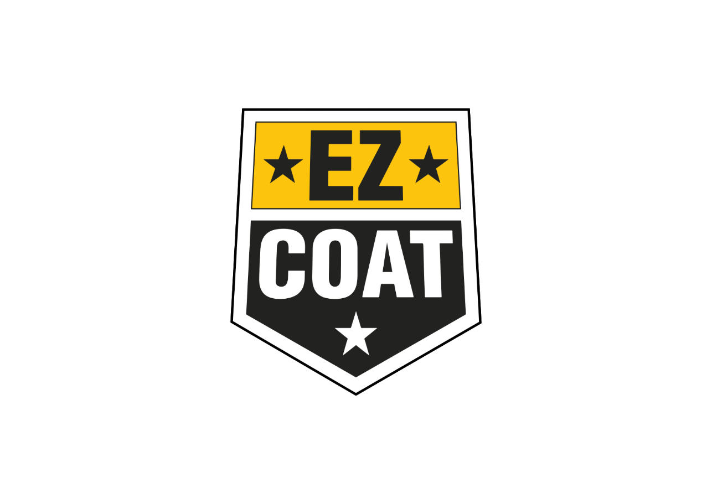

|
 |
NEXT Industries • Chemia budowlana
Europejska technologia chemii budowlanej. Amerykańskie doświadczenie. Skalowalny model dystrybucji.
Marka specjalistycznych produktów do wykonywania, ochrony i renowacji elewacji — oferowana w USA w modelu opartym na produkcji w Polsce, imporcie kontenerowym, lokalnej dystrybucji i wsparciu sprzedaży przez narzędzia AI.
Rozważane nazwy handlowe projektu: EZ COAT oraz NEXTCOAT (porównanie w rozdz. 19).
| Dokument | Prezentacja dla partnerów biznesowych i inwestorów z USA |
| Podmiot | NEXT Industries — marka EZ COAT / NEXTCOAT |
| Status | Poufne — wersja robocza do uzgodnień |
Opracowanie uporządkowane na podstawie materiału źródłowego projektu. Wartości oznaczone jako „Założenie wymagające potwierdzenia” oraz pola „Dane do uzupełnienia” wymagają weryfikacji przed decyzjami inwestycyjnymi.
| 1 | Streszczenie projektu |
| 2 | Geneza i koncepcja |
| 3 | Problemy wykonawców i problem rynkowy |
| 4 | Rozwiązanie i portfolio produktów |
| 5 | Produkty priorytetowe na start |
| 6 | Ekonomika produktów |
| 7 | Logistyka kontenerowa |
| 8 | Model biznesowy w USA |
| 9 | Współpraca partnera polskiego i amerykańskiego |
| 10 | Wsparcie sprzedaży przez AI |
| 11 | Zapotrzebowanie finansowe |
| 12 | Organizacja w Polsce i USA |
| 13 | Dokumentacja i wymagania regulacyjne |
| 14 | Budowa produktu markowego |
| 15 | Kluczowe przewagi |
| 16 | Ryzyka projektu |
| 17 | Cele na pierwsze 12 miesięcy |
| 18 | Architektura marek NEXT Industries |
| 19 | Porównanie nazw: EZ COAT i NEXTCOAT |
| 20 | Mini brandbook |
| 21 | Informacje wymagające potwierdzenia |
Rozdziały 1–17 opisują koncepcję biznesową. Rozdziały 18–20 dotyczą architektury marek i identyfikacji wizualnej. Rozdział 21 zbiera wszystkie pozycje wymagające potwierdzenia lub uzupełnienia. Numeracja została ujednolicona (system 1. / 1.1. / 1.2.) względem materiału źródłowego.
EZ COAT to marka specjalistycznych produktów do wykonywania, ochrony i renowacji elewacji. Celem projektu jest uruchomienie sprzedaży w Stanach Zjednoczonych.
Model wejścia na rynek opiera się na sześciu filarach:
Połączenie europejskiej technologii chemii budowlanej z amerykańskim doświadczeniem wykonawczym, w skalowalnym modelu dystrybucji nakierowanym na kompletny system, a nie pojedynczy produkt.
Wykonawcy elewacji oraz mniejsze hurtownie budowlane bez dostępu „z pierwszej ręki” do systemów wiodących producentów; docelowo także sprzedaż internetowa i projekty inwestycyjne.
Produkt tworzony wspólnie przez wykonawców z USA i technologów z Europy, wytwarzany w Polsce i importowany kontenerami do lokalnego magazynu w USA. Przewaga budowana jest przez kompletność systemu, atrakcyjny koszt produkcji oraz wsparcie sprzedaży narzędziami AI.
„Chcemy produktów łatwych (EZ — easy) w nanoszeniu, bogatych w składniki, które zapewniają produktom długowieczność. Chcemy produktów odpornych na wodę i spękania. Chcemy produktów o wysokiej wydajności, które obniżą koszty naszych prac na elewacjach.”
Prośba dwóch wiodących, doświadczonych wykonawców elewacji z USA skierowana do dwóch polskich technologów z wieloletnim doświadczeniem.
Połączone, blisko 100-letnie doświadczenie w wykonawstwie i technologii — z Ameryki i z Europy — zaowocowało linią produktów EZ COAT, przeznaczoną do ochrony i zdobienia elewacji.
Nazwa „EZ” odwołuje się do idei easy — łatwej aplikacji produktów, będącej bezpośrednią odpowiedzią na oczekiwania wykonawców.
Koncepcja marki wyrasta z realnego zapotrzebowania rynku: produkty mają być łatwe w nanoszeniu, trwałe, odporne na wodę i spękania oraz wydajne kosztowo dla wykonawcy.
Produkty EZ COAT są odpowiedzią na rzeczywiste problemy wykonawców:
Rynek materiałów elewacyjnych w USA jest duży, ale zdominowany przez sześciu głównych producentów. Są to duże korporacje, które przejmują mniejszych producentów w momencie, gdy ci zaczynają zabierać im rynek.
| Producent | Producent |
|---|---|
| Synergy | Masterwall |
| Parex | Dryvit |
| Sto | Mapei |
Wymienionych sześciu producentów sprzedaje przez lokalnych dystrybutorów, z którymi utrzymuje bardzo silne relacje oparte na wyłączności. Ogranicza to szanse mniejszych, nowych hurtowni — prowadzonych m.in. przez Polaków, Hindusów czy Meksykanów.
Mniejsze hurtownie to naturalni partnerzy projektu — nie mają dostępu do taniego, dobrego materiału od głównych graczy. Ich klienci (wykonawcy) najczęściej nie potrzebują pełnej dokumentacji i mogą kupować produkt typu generic (bez dodatkowych „papierów”), o ile jest dobry i tani.
Rynek jest duży, lecz zamknięty umowami na wyłączność sześciu korporacji. Luka rynkowa to niezależne, mniejsze hurtownie i wykonawcy poszukujący dobrego materiału w atrakcyjnej cenie — segment, w którym dokumentacja bywa drugorzędna wobec jakości i ceny.
EZ COAT będzie oferować w USA kompletną linię materiałów przeznaczonych do:
| Grupa | Produkty |
|---|---|
| Grupa I Produkty elewacyjne |
tynki akrylowe, tynki silikonowe, tynki elastyczne, farby elewacyjne, grunty, grunty wzmacniające, preparaty poprawiające przyczepność, masy naprawcze, produkty do renowacji elewacji |
| Grupa II Zabezpieczenie przed wodą |
elastyczne powłoki wodoodporne, produkty typu WeatherShield, hydroizolacje powierzchni pionowych, masy uszczelniające, impregnaty do betonu, impregnaty do kamienia, impregnaty do kostki brukowej |
| Grupa III Kleje i zaprawy |
kleje do siatki, kleje do płyt izolacyjnych, kleje do płytek, kleje do kamienia, kleje do okładzin elewacyjnych, zaprawy naprawcze, zaprawy wyrównujące |
| Grupa IV Systemy stucco |
tradycyjne tynki cementowe, monocouche (styl francuski lub angielski), gotowe mieszanki stucco, koncentraty cementowe do mieszania z lokalnym piaskiem, warstwy dekoracyjne, grunty i powłoki końcowe |
| Grupa V Posadzki i nawierzchnie |
masy samopoziomujące, zaprawy naprawcze, produkty do przygotowania podłoża, grunty do posadzek, impregnaty, powłoki zabezpieczające |
EZ COAT może zwiększać wartość każdej sprzedaży poprzez oferowanie produktów uzupełniających:
Produkty uzupełniające mogą pochodzić zarówno z Polski, jak i od producentów amerykańskich — nie wszystkie muszą być importowane. Ciężkie i tanie produkty powinny w dalszym etapie być produkowane lub mieszane lokalnie w USA.
Portfolio obejmuje pięć grup produktowych pokrywających pełny cykl prac elewacyjnych oraz akcesoria systemowe. Strategia zaopatrzenia zakłada import produktów o wysokiej wartości i lokalne pozyskiwanie/produkcję pozycji ciężkich i tanich.
Nie rekomenduje się rozpoczynania sprzedaży od całego portfolio. Pierwszy etap powinien obejmować produkty o:
| Produkt | Opis |
|---|---|
| EZ COAT WeatherShield | Elastyczna powłoka zabezpieczająca przed wodą |
| EZ COAT Silicone Exterior Paint | Wysokiej jakości silikonowa farba elewacyjna |
| EZ COAT Elastomeric Finish | Tynk elastyczny |
| EZ COAT Acrylic Finish | Podstawowy tynk akrylowy |
| EZ COAT Base Coat & Adhesive | Klej i warstwa bazowa do siatki |
| EZ COAT Primer | Grunt systemowy |
| EZ COAT Stone & Tile Adhesive | Klej do kamienia i okładzin elewacyjnych |
| EZ COAT Stone Protector | Impregnat do kamienia i betonu |
Podstawowy klej do siatki i tynk akrylowy mogą generować umiarkowaną marżę, ale stanowią nośnik wejścia na rynek — są produktami powszechnie stosowanymi. Najwyższy potencjał marżowy mogą mieć:
Start obejmuje 8 produktów łączących pozycje wolumenowe (klej, tynk akrylowy — wejście na rynek) z pozycjami wysokomarżowymi (powłoki wodoodporne, farby, impregnaty), sprzedawanymi w logice zestawów systemowych.
| Produkt | Produkcja w PL | Transport | Koszt dostarczony do USA | Cena hurtowa / do dystrybutora | Cena detaliczna |
|---|---|---|---|---|---|
| Tynk akrylowy 65 lbs | ~17 | ~7 / wiadro | ~29–34 | ~50–60 | ~100–120 |
| Tynk silikonowy 65 lbs | ~o 3 wyżej niż akrylowy | — | — | ~o 7–20 wyżej niż akrylowy | — |
| Farba elewacyjna 5 gal | ~48† | ~7 | ~55 | ~100–120 | ~200–220 |
| WeatherShield 5 gal | ~56† | ~6 | ~62 | ~105 | ~200–220‡ |
| Klej do siatki | ~4 | ~5,50 | ~9,50§ | ~12–15 | — |
† Koszt produkcji i konfekcjonowania. ‡ Cena dla wykonawcy: ~145–165 USD. § Koszt dostarczony przed magazynem i obsługą. Dla tynku akrylowego marża producenta i przygotowanie eksportowe: ~5–10 USD. Tynk silikonowy: wyższa marża i lepsze pozycjonowanie produktu.
Klej do siatki może być produktem o niższej marży procentowej, ale: wypełnia wolne miejsce w kontenerze, zwiększa wartość całego systemu, wspiera sprzedaż tynków, gruntów i siatki oraz zmniejsza ryzyko stosowania niekompatybilnych produktów.
Założenia produktowe i transportowe wynikają z materiału roboczego przygotowanego dla projektu USA.
Model początkowy zakłada produkcję wszystkich podstawowych produktów w Polsce i transport do USA pełnymi kontenerami.
| Pozycja kosztowa | Koszt orientacyjny |
|---|---|
| Transport z fabryki do portu w Polsce | ~1 000 |
| Fracht morski | ~2 000 |
| Transport z portu do magazynu w USA | ~1 000 |
| Pozostałe koszty portowe, dokumentacyjne i rezerwa | ~1 000 |
| Łączny wstępny koszt na kontener | ~4 000–5 000 |
Orientacyjnie ~500–600 dużych wiader w kontenerze, zależnie od:
Jednostkowy koszt logistyki to ~4 000–5 000 USD na kontener mieszczący ~500–600 dużych wiader — parametr kluczowy dla kalkulacji ceny dostarczonej i doboru produktów startowych o niskim udziale transportu.
Podmiot EZ COAT USA powinien działać jako:
| Kanał | Charakterystyka |
|---|---|
| 1 Wykonawcy elewacji | Kanał startowy; docelowo przekazanie obsługi do hurtowni |
| 2 Hurtownie budowlane | Małe hurtownie bez dostępu „z pierwszej ręki” do systemów wiodących |
| 3 Sprzedaż internetowa | Sprzedaż próbek oraz produktów |
| 4 Projekty inwestycyjne | Wynikają z oferty drogich systemów dostępnych w atrakcyjnej cenie |
EZ COAT USA pełni funkcję importera, właściciela dokumentacji, centrum marketingu i operatora systemu dystrybucji. Sprzedaż startuje od wykonawców, a następnie rozwija się przez hurtownie, kanał internetowy i projekty inwestycyjne.
| Partner amerykański zapewnia | Partner polski zapewnia |
|---|---|
|
|
Partner amerykański odpowiada za kapitał, spółkę, logistykę i sprzedaż lokalną; partner polski — za technologię, produkcję, jakość, dokumentację i rozwój produktów. Podział łączy know-how europejskie z dostępem do rynku USA.
Narzędzia AI mają zwiększać skuteczność sprzedaży oraz ograniczać koszt jej budowy.
AI będzie wspierać przygotowywanie: wiadomości e-mail, wiadomości na LinkedIn, ofert, prezentacji, follow-upów, treści dla konkretnych branż oraz propozycji zestawów produktowych.
AI pomoże w tworzeniu: filmów instruktażowych, grafik porównawczych, postów dla wykonawców, studiów przypadków, materiałów „przed i po”, porad wykonawczych, kampanii reklamowych oraz newsletterów.
System CRM wspierany przez AI będzie: przypominał o kolejnych kontaktach, kwalifikował leady, oceniał prawdopodobieństwo zakupu, proponował kolejne działania, przygotowywał podsumowania rozmów oraz analizował skuteczność handlowców.
AI obejmuje cztery obszary: budowę bazy klientów, personalizację kontaktu, produkcję treści marketingowych i obsługę handlową w CRM — z celem zwiększenia skuteczności i obniżenia kosztu pozyskania klienta.
Wariant pilotażowy obejmuje cztery kategorie nakładów:
| Kategoria | Kwota (USD) |
|---|---|
| Towar i logistyka | do uzupełnienia |
| Dokumentacja i przygotowanie produktów | do uzupełnienia |
| Organizacja w USA | do uzupełnienia |
| Sprzedaż i marketing | do uzupełnienia |
| Razem — wariant pilotażowy | do uzupełnienia |
Struktura zapotrzebowania finansowego jest zdefiniowana (towar i logistyka, dokumentacja, organizacja w USA, sprzedaż i marketing). Kwoty pozostają do ustalenia — to kluczowy element do domknięcia przed decyzją inwestycyjną.
Dla produktów zaklasyfikowanych jako niebezpieczne producent lub importer musi przygotować odpowiednie etykiety i karty SDS. OSHA wskazuje również, że dla objętych przepisami produktów wymagane są dane podmiotu odpowiedzialnego, w tym amerykański adres i numer telefonu.
Strona polska buduje zaplecze produkcyjno-technologiczne i eksportowe; strona amerykańska — pełną strukturę operacyjną importera (spółka, magazyn, obsługa celna, prawna i handlowa) wraz z wymaganymi elementami zgodności regulacyjnej.
Każdy produkt powinien posiadać własny zestaw dokumentów.
| Dokument | Opis |
|---|---|
| SDS — Safety Data Sheet | OSHA wymaga, aby producenci i importerzy niebezpiecznych chemikaliów oceniali zagrożenia oraz przygotowywali etykiety i karty SDS |
| TDS — Technical Data Sheet | Karta techniczna produktu |
| Etykieta amerykańska | Zgodna z wymaganiami rynku USA |
| Certificate of Analysis | Certyfikat analizy |
| Certificate of Conformance | Potwierdzenie zgodności danej partii ze specyfikacją EZ COAT |
| Instrukcja aplikacji | Oddzielna, praktyczna instrukcja dla wykonawcy |
| Specyfikacja systemowa | Dokument opisujący nie tylko produkt, ale cały układ warstw EZ COAT |
Produkty elewacyjne i architektoniczne mogą podlegać ograniczeniom dotyczącym zawartości lotnych związków organicznych (VOC). Federalne regulacje EPA dotyczą producentów i importerów architectural coatings oraz wprowadzają limity VOC dla poszczególnych kategorii produktów.
Poszczególne stany mogą stosować bardziej restrykcyjne wymagania — szczególnie:
Produkty powinny być projektowane od początku jako low-VOC, zgodne z możliwie szeroką liczbą stanów i gotowe do sprzedaży bez tworzenia wielu odmiennych receptur.
Jeżeli produkty będą sprzedawane konsumentom, a nie wyłącznie profesjonalnym wykonawcom, mogą podlegać także wymaganiom Federal Hazardous Substances Act. Przepisy te wymagają odpowiedniego oznakowania niebezpiecznych produktów gospodarstwa domowego, w tym:
CPSC wskazuje, że niebezpieczne produkty konsumenckie muszą posiadać odpowiednie ostrzeżenia na opakowaniu.
Ostateczna klasyfikacja powinna zostać przygotowana przez specjalistę regulacyjnego na podstawie dokładnego składu każdej receptury.
Każdy produkt wymaga kompletu dokumentów (SDS, TDS, etykieta, certyfikaty, instrukcja, specyfikacja systemowa). Kluczowe obszary zgodności to limity VOC (EPA + stany) oraz — przy sprzedaży konsumenckiej — wymogi FHSA/CPSC. Zaleca się projektowanie produktów jako low-VOC i weryfikację klasyfikacji przez specjalistę.
Sam import receptury i umieszczenie logo na wiadrze nie wystarczą, aby produkt przestał być postrzegany jako generic lub private label. Należy stworzyć własny pakiet dowodów potwierdzających parametry EZ COAT.
Nazwa o charakterze opisowym jest słabsza i trudniejsza do ochrony niż nazwa sugestywna, arbitralna lub fantazyjna. USPTO podkreśla, że znaki opisowe są trudniejsze do rejestracji i egzekwowania. Dlatego rekomenduje się budowanie dodatkowych, bardziej odróżniających nazw technologii, na przykład:
EZ-Flex Technology · EZ-HydroShield · EZ-CrackBridge · EZ-Siloxane Matrix · EZ-Bond System · EZ-WeatherLock
Przewaga konkurencyjna łączy stronę produktową (sprawdzone receptury, kompletny system, atrakcyjny koszt produkcji), rynkową (doświadczenie USA + Europa) i operacyjną (AI w sprzedaży, elastyczność rozwoju i lokalnej produkcji).
| Kategoria ryzyka | Opis |
|---|---|
| Logistyczne | Opóźnienia transportu, kontrole celne i wzrost frachtu |
| Regulacyjne | Niewłaściwa klasyfikacja produktu lub etykieta |
| Jakości | Różnice pomiędzy partiami |
| Sprzedażowe | Powolne przyjęcie nowej marki |
| Produktowe | Nieprawidłowe stosowanie materiału przez wykonawcę |
Pięć głównych obszarów ryzyka: logistyka, zgodność regulacyjna, powtarzalność jakości, tempo adopcji marki oraz poprawność stosowania produktów przez wykonawców. Każdy z nich powinien mieć przypisane działania ograniczające przed skalowaniem.
Pierwszy rok to uruchomienie spółki i logistyki, przygotowanie 5–8 produktów z pełną dokumentacją, budowa sieci wykonawców i dystrybucji oraz dojście do powtarzalnej sprzedaży wraz z programem certyfikacji i systemem pigmentowania.
Projekt chemii budowlanej wpisuje się w szerszą rodzinę marek handlowych spółki NEXT Industries.
| Marka | Status | Obszar |
|---|---|---|
| NEXTCOLD | marka handlowa | Marka handlowa spółki NEXT Industries |
| NEXTOIL | planowana | Oleje przeznaczone m.in. dla przemysłu i ogrodu |
| EZ COAT / NEXTCOAT | w opracowaniu | Chemia budowlana — projekt opisany w niniejszym dokumencie (dwie rozważane nazwy) |
NEXT Industries rozwija portfel marek: NEXTCOLD (marka handlowa) i planowaną NEXTOIL (oleje dla przemysłu i ogrodu). Projekt chemii budowlanej dołącza do tej rodziny pod jedną z dwóch rozważanych nazw: EZ COAT lub NEXTCOAT.
Dla projektu rozważane są dwie nazwy. Zestawienie jest neutralne i dotyczy wyłącznie warstwy komunikacyjnej.
| Kryterium | EZ COAT | NEXTCOAT |
|---|---|---|
| Główny przekaz | Mocniej komunikuje łatwość aplikacji („EZ” = easy) | Mocniej komunikuje przynależność do rodziny NEXT Industries |
| Źródło nazwy | Występuje w materiale źródłowym projektu | Alternatywna, spójna z NEXTCOLD i NEXTOIL |
| Spójność z rodziną marek | Samodzielna względem przedrostka „NEXT” | Bezpośrednio nawiązuje do przedrostka „NEXT” |
Wybór sprowadza się do akcentu: EZ COAT podkreśla korzyść (łatwość aplikacji), NEXTCOAT podkreśla przynależność do rodziny marek NEXT Industries. Decyzja wymaga uzupełnienia o odrębną weryfikację prawną i domenową.
Znaki prezentowane są w oryginalnej formie — bez zmian, bez zniekształceń i bez przeprojektowania.
| Próbka | Kolor | HEX | RGB | Zastosowanie |
|---|---|---|---|---|
| Amber EZ | #FCC40C | 252, 196, 12 | Kolor akcentowy EZ COAT | |
| Grafit | #222220 | 34, 34, 32 | Tekst godła EZ COAT, elementy neutralne | |
| Czerwień NEXTCOAT | #D81824 | 216, 24, 36 | Kolor akcentowy NEXTCOAT („COAT”, sygnet) | |
| Czerwień głęboka | #98040F | 152, 4, 15 | Dolny zakres gradientu sygnetu NEXTCOAT | |
| Grafit-navy | #0B1821 | 11, 24, 33 | Człon „NEXT” w logotypie NEXTCOAT | |
| Biel | #FFFFFF | 255, 255, 255 | Tło, kontrapunkt, negatyw |
Wartości kolorów odczytano bezpośrednio z dostarczonych plików znaków. Specyfikacja druku (odpowiedniki CMYK / Pantone) — dane do uzupełnienia.
Oba znaki wykorzystują bezszeryfowy, pogrubiony krój geometryczny o wysokiej czytelności i technicznym charakterze. Dla materiałów towarzyszących zaleca się spójny, jednolity krój bezszeryfowy.
Powyższe zastosowania mają charakter poglądowy i bazują na oryginalnych znakach. Pełne wersje znaku (mono, negatyw, warianty na tłach) — dane do uzupełnienia.
Istnieją dwa gotowe kierunki wizualne: godło EZ COAT (amber + grafit) oraz logotyp NEXTCOAT (czerwień + grafit-navy, z sygnetem heksagonalnym). Oba stosuje się w formie oryginalnej. Do uzupełnienia pozostają: nazwy krojów, specyfikacja druku (CMYK/Pantone) oraz pełny zestaw wariantów znaku.
Zestawienie wszystkich pozycji oznaczonych w dokumencie jako założenia do potwierdzenia lub dane do uzupełnienia.
| Obszar | Pozycja |
|---|---|
| Ekonomika (rozdz. 6) | Ceny, koszty i marże produktów — do potwierdzenia ofertami transportowymi, taryfami celnymi, stawkami magazynowymi i wycenami producentów |
| Logistyka (rozdz. 7) | Koszty transportu (~4 000–5 000 USD/kontener) i pojemność (~500–600 wiader) — wartości orientacyjne |
| Budowa marki (rozdz. 14) | Nazwy technologii (EZ-Flex, EZ-HydroShield, EZ-CrackBridge i in.) — wymagają badania dostępności prawnej |
| Porównanie nazw (rozdz. 19) | Kwestie prawne, domenowe, SEO i znaków towarowych — wymagają osobnej weryfikacji |
| Obszar | Brakująca informacja |
|---|---|
| Zapotrzebowanie finansowe (rozdz. 11) | Kwoty dla czterech kategorii nakładów oraz suma wariantu pilotażowego |
| Brandbook — kolory (rozdz. 20.2) | Specyfikacja druku: odpowiedniki CMYK / Pantone dla kolorów marki |
| Brandbook — typografia (rozdz. 20.3) | Nazwy krojów pismowych logotypów oraz kroju tekstowego komunikacji marki |
| Brandbook — warianty znaku (rozdz. 20.4) | Pełne wersje znaku: mono, negatyw, warianty na różnych tłach |
| Materiały NEXTCOAT | Poza dostarczonym logotypem NEXTCOAT brak dalszych materiałów wizualnych tej marki (systemy, opakowania, wzorniki) |
Przed decyzją inwestycyjną należy domknąć przede wszystkim: budżet wariantu pilotażowego (kwoty), potwierdzenie kosztów produkcji i logistyki oraz weryfikację prawną nazw i znaków. Pozostałe pozycje dotyczą uszczegółowienia identyfikacji wizualnej.
— Koniec dokumentu — • Opracowano wyłącznie na podstawie dostarczonego materiału źródłowego i wskazanego kontekstu.